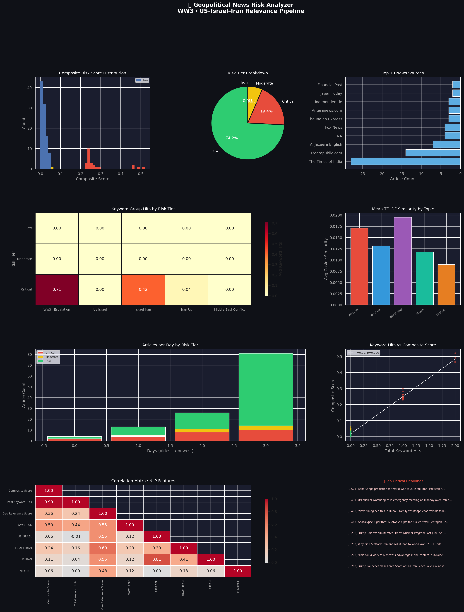

Generated: 2026-03-02 08:15 UTC | Pipeline: News Scraping → ETL → NLP → EDA
| Headline | Source | Score | Risk Tier | KW Hits |
|---|---|---|---|---|
| Baba Vanga prediction for World War 3: US-Israel-Iran, Pakistan-Afghanistan, Russia-Ukrain | The Times of India | 0.5206 | Critical | 2 |
| UN nuclear watchdog calls emergency meeting on Monday over Iran attacks | The Times of India | 0.4907 | Critical | 2 |
| ‘Never imagined this in Dubai’: Family WhatsApp chat reveals fear during Iran attacks | The Times of India | 0.4678 | Critical | 2 |
| Apocalypse Algorithm: AI Always Opts for Nuclear War. Pentagon Responds by Deploying Its T | Globalresearch.ca | 0.4628 | Critical | 2 |
| Trump Said We ‘Obliterated’ Iran’s Nuclear Program Last June. So Why Are We About To Go Wa | Freerepublic.com | 0.2980 | Critical | 1 |
| Why did US attack Iran and will it lead to World War 3? Full update on Operation Epic Fury | The Times of India | 0.2816 | Critical | 1 |
| ‘This could work to Moscow’s advantage in the conflict in Ukraine’: Russian analysts on th | RT | 0.2629 | Critical | 1 |
| Trump Launches ‘Task Force Scorpion’ as Iran Peace Talks Collapse | Naturalnews.com | 0.2619 | Critical | 1 |
| Polymarket Bravely Defends Betting On World War 3 As A Valuable Public Service | Kotaku | 0.2598 | Critical | 1 |
| Tucker Carlson Denounces Trump’s Iran Attack as ‘Absolutely Disgusting and Evil’ | Freerepublic.com | 0.2508 | Critical | 1 |
